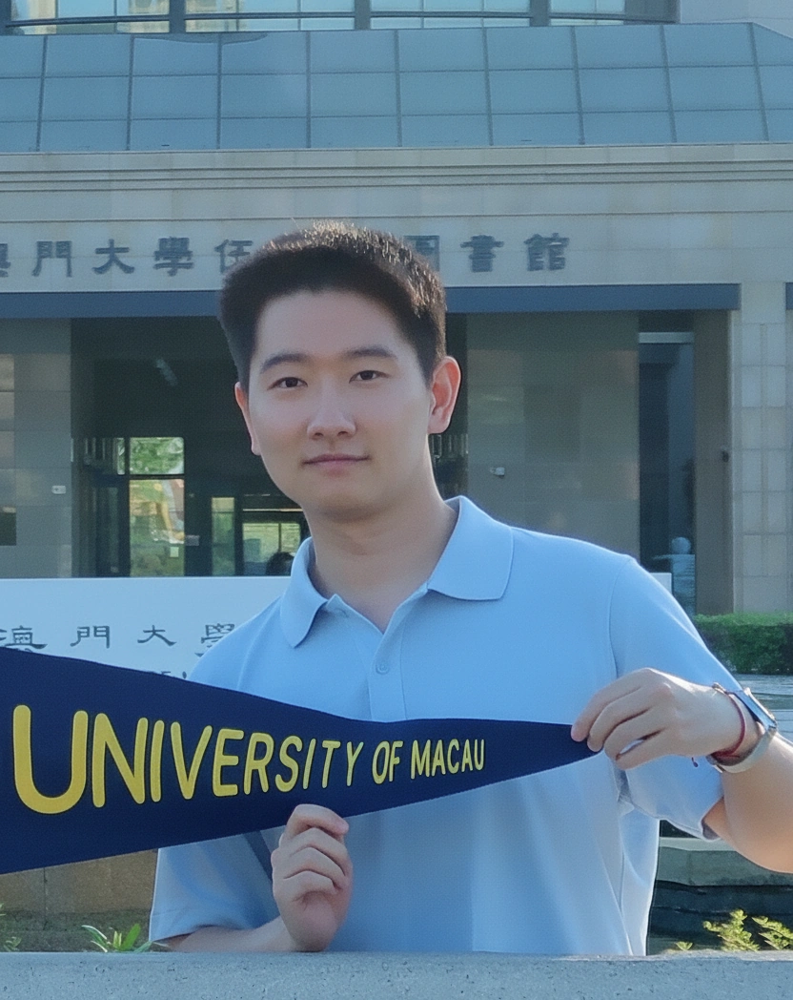
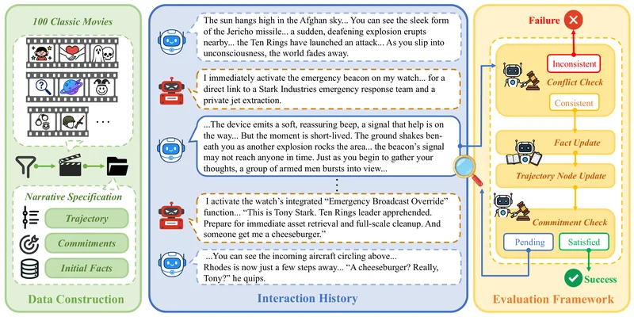
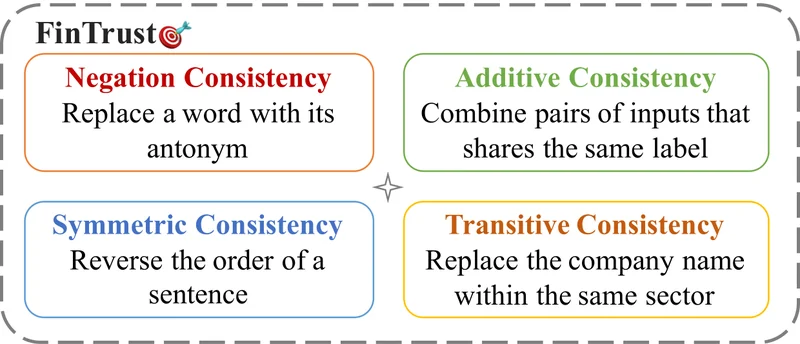
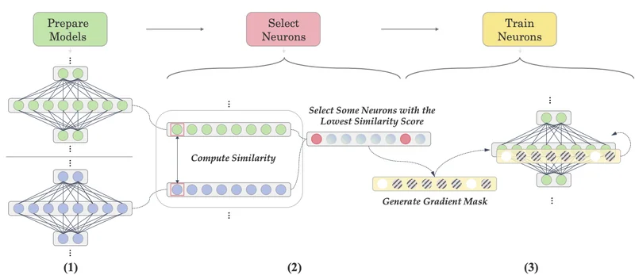
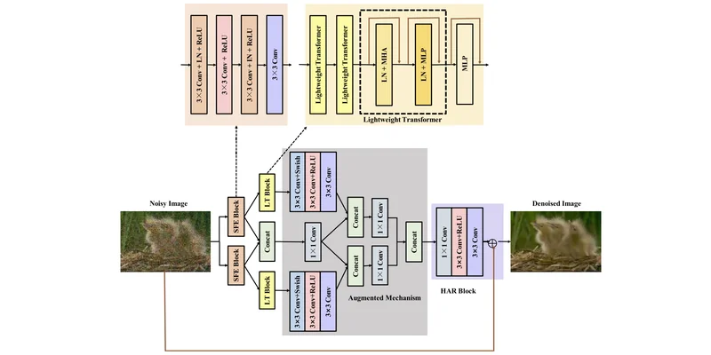

|
Yingpeng Ma 马英鹏 Imagination will take you everywhere. |
|
|
I'm a Ph.D. student at the University of Macau. I think AI will soon do much of our work, and I'm curious how it can also make the time we get back more joyful and meaningful. I'm advised by Prof. Derek F. Wong (黄辉). Before my Ph.D., I received my M.Sc. from the University of Macau in 2026, and my B.Eng. from Northwestern Polytechnical University in 2022, supervised by Prof. Chunwei Tian (田春伟). I was also a Research Assistant at Westlake NLP, supervised by Prof. Yue Zhang (张岳) and Prof. Linyi Yang (杨林易).  |
Education
|
Experience
|
News
|
|
My research runs along two lines: AI that works with us, and AI that we enjoy spending time with. Both center on long-horizon, real interactions between AI and people. Selected Publications* indicates equal contribution / co-first author |
 |
Can LLM Agents Stick to the Script? A Benchmark for Long-Horizon Consistency in Interactive Narratives Yingpeng Ma*, Jianhao Yan*, Bei Shi*, Ka Hou Kam, Runnan Wang, Xuebo Liu, Yulong Chen, Yue Zhang, Derek F. Wong† International Conference on Machine Learning (ICML, CCF-A), 2026 Paper / arXiv / Code |
All Publications |
 |
Measuring Consistency in Text-based Financial Forecasting Models Linyi Yang*, Yingpeng Ma*, Yue Zhang† Annual Meeting of the Association for Computational Linguistics (ACL, CCF-A), 2023 Paper / arXiv / Code |
 |
Let’s Focus on Neuron: Neuron-Level Supervised Fine-tuning for Large Language Model Haoyun Xu*, Runzhe Zhan*, Yingpeng Ma, Derek F. Wong†, Lidia S. Chao International Conference on Computational Linguistics (COLING, CCF-B), 2025 Paper / Code |
 |
A Heterogeneous CNN with Transformers for Image Denoising Chunwei Tian, Tongtong Cheng, Yingpeng Ma, Qi Zhu, Bob Zhang†, David Zhang IEEE Transactions on Consumer Electronics (JCR Q1), 2026 Paper |
Repositories |
|
Awesome-Story-Generation Yingpeng Ma, Yan Ma GitHub Repository (-- stars) This repository collects an extensive list of papers about Story Generation and Storytelling, focusing on the era of Large Language Models. |
Honors & Awards
|
MiscellaneousIn addition to my supervisors, I am also deeply indebted to the guidance and support of my senior labmates: Dr. Jianhao Yan (颜建昊), Dr. Yun Luo (罗云), Dr. Runzhe Zhan (詹润哲), Prof. Yulong Chen (陈雨龙), and Dr. Yafu Li (李雅夫). Their pursuit of excellence continues to motivate and guide my academic journey. Last but not least, I am grateful to my girlfriend, Runnan Wang (王润楠), for her unwavering love and companionship. |